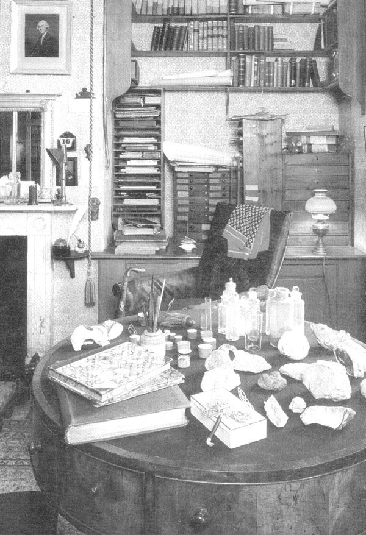
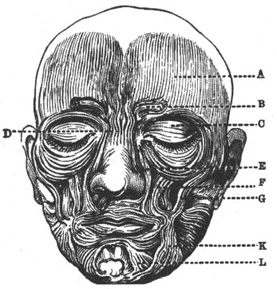
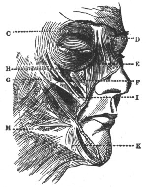
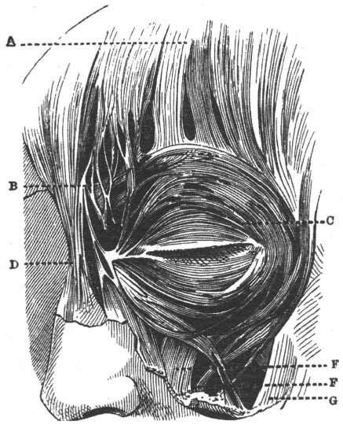
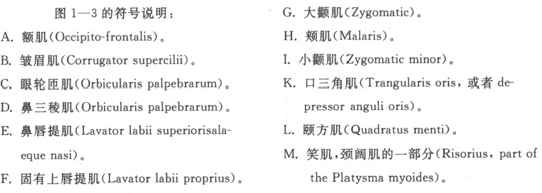

绪论
·Exordium·
在上面所指出的日期［1838年］里，我已经偏爱于相信进化原理，也就是物种从另一批比较低等的类型里发生出来的原理。因此，在我阅读贝尔爵士的大作时候，他认为人类好像是连带着那些特别适应于他的表情的一定的肌肉而被创造出来的这种见解，就使我感到极其不满意。我觉得，习惯用一定的动作来表现出我们的感情，虽然现在它已经成为天生的，但是很可能当时是靠了某种方法而逐渐获得的。可是，要去确定这些习惯以前怎样被获得——这是困难透顶的事情。应当从新的角度去考察全部问题，而且对每种表情都要作合理的解释，这种信念就使我尝试来写述现在这个著作，可是它终究还是写得不完善的。

达尔文在党豪斯的书房。
已经有很多著作发表了关于表情的问题， (1) 但是大多数的著作都是关于人相学方面的，就是关于用研究面部的固定的形状的方法来认定人的性格方面的。我在现在这本书里，并不去讨论人相学的问题。虽然我查看了一些古旧的论著， (2) 但是它们对我很少有用处或者完全无用。画家勒布朗（Le Brun）在1667年所出版的名著Conférences (3) （《讲义》），是最著名的一部古书，并且含有几个良好的意见。还有一个比较陈旧的著作，就是Discours （《演讲集》），是著名的荷兰解剖学家康普尔（Camper）在1774—1782年里所讲述的； (4) 它未必能够被看做是在这个问题上有什么显著的进步。下面所举出的著作则相反，值得大家加以最充分的注意。
查理士·贝尔（Charles Bell）爵士由于自己在生理学上有发现而获得相当的声誉；他在1806年出版自己的著作《表情的解剖学》（Anàtomy of Expression ）的初版，而在1844年出版这本书的第三版。 (5) 可以公正地说，他不仅已经奠定了这个作为科学分科之一的论题，而且也在它上面建筑了卓越的体系。他的这个著作在各方面都是很有趣的；在它里面载有关于各种情绪的引人入胜的绘画，而且也说明得令人敬佩。大家都公认，他的贡献主要就在于说明了表情动作和呼吸动作之间所存在的密切关系。在他的最重要的见解当中，有一个见解，粗粗一看，好像是无关紧要的。这就是：在剧烈向外呼气的时候，眼睛周围的肌肉就作不随意的收缩，以便保护这一对柔弱的器官，而避免血液对它们的压力。由于我的请求，乌得勒支（Utrecht，丹麦的一个省）的唐得尔斯（Donders）教授盛情地替我彻底研究了这个事实；后面我们可以知道，这个事实很明显地表明出几种最重要的人类的面部表情来。贝尔爵士的著作的功绩，虽然被很多外国的著者所看轻，或者完全忽略去，但是也得到几个著者的完全承认，例如被列莫因（Lemoine）先生所承认。 (6) 列莫因先生十分公正地说道：“Le livre de Ch. Bell devrait être médité par quiconque essaye de faire parler le Visage de l'homme，par les philosophes aussi bien que par les artistes，car，sous une apparence plus légère et sous le prétexte de l'esthétique，c'est un des plus beaux monuments de la science des rapports du physique et du moral”。 (7)
根据我们现在就要来指出的理由可以知道，贝尔爵士不打算把自己的见解再发展到它可能达到的地步。他不打算去说明：为什么在各种不同的情绪产生的时候，会有各种不同的肌肉开始发生作用；例如，为什么一个经受到悲哀或者忧虑的人会使得双眉的内端向上举起和使嘴角向下压抑。
1807年，莫罗出版拉伐脱尔所编著的《人相学交集》 (8) ；在这本书里，莫罗添加进几篇自己所写的文章；在这几篇文章里含有许多关于面部肌肉的动作的卓越叙述，还有很多宝贵的意见。可是，他对这个主题的哲学观点方面，却说明得很少。例如，他在讲到皱眉的动作——就是法国著者叫做sourcilier（皱眉肌，Corrugator supercilii）的肌肉的收缩——时候，公正地指出说：“Cette action des sourciliers est un des symptômes les plus tranchés de l'expression des affections pénibles ou concentrées” (9) 。接着，他又补充说，这些肌肉，从它们的附着情形和地位看来，是适合于“à resserrer，à concentrer les principaux traits de la face ，comme it convient dans toutes ces passions vraiment oppressives ou profondes，dans ces affections dont le sentiment semble porter l'organisation à revenir sur elle-même，à se contractor et à s'amoindrir ，comme pour offrir momns de prise et de surface à des impressions redoutables ou importunes” (10) 。凡是认为这一类说法能够说明各种不同的表情起源的人，都会对这个问题采取一种和我极不相同的观点。
从上面所举出的句子里，可以看出，我们这个题目的哲学见解，在和画家勒布朗所达到的地步来作比较的时候，即使有些进步，但是也进步得极其微小；勒布朗在1667年描写到恐怖的表现时候说道：“Le sourcil qui est abaìssé d'un eôte et élevé de l'autre，fait voir que la partie élevée semble le vouloir joindre au cerveau pour le garantir du mal que l'âme aperçoit，et le côté qui est abaissé et qui paraît enflé，nous fait trouver dans cet état par les esprits qui viennent du cerveau en abondance，comme pour couvrir l'ame et la défendre du mal qu'elle craint；la bouche fort ouverte fait voir le saisissement du coeur，par le sang qui se retire vers lui，ce qui l'oblige，voulant respirer，à faire un effort qui est cause que la bouche s'ouvre extrêmement，et qui，lorspu'it passe par les organes de la voix，forme un son qui n'est point articulé；qu si les muscles et les veines paraissent enflés，ce n'est que par les esprits que le cerveau envoie en ces parties-là”。 (11) 我以为，上面这些文句是值得引举出来的，因为可以表明有人对这个问题所写出来的惊人的废话的榜样来。
白尔格斯（Burgess）博士所著的《脸红的生理或者机制》（The Physiology or Mechanism of Blushing ），在1839年出版；我将在自己所写的这本书的第13章里经常引用到这个著作。
1862年，杜庆博士出版了自己所著的《人相的机制》（Mecanisme de la Physionomie ）的两个版本——对开本和八开本；在这个著作里，他用电气去分析面部肌肉的动作，并且用很精美的照片来说明这些动作。他很慷慨地允许我尽量随着自己的需要去把他的照片翻印在现在这本书里。可是，有几个他的同国人却很少提说到他的著作，或者甚至完全忽略这些著作。这很可能是因为杜庆博士过分夸大了个别的肌肉收缩在表情动作里所具有的意义了，因为从亨列的解剖图里可以看出， (12) 由于肌肉彼此联系得有这样的密切，很难使人相信它们会发生各自分离的动作；我认为，这些解剖图非常精美，是以前从来没有出版过的。可是确实无疑的是：杜庆博士也清楚地想到错误的某种来源，因为大家也知道，他借助于电气刺激方法，去顺利说明手的肌肉生理，所以极可能是他在面部肌肉的收缩方面的说法一般是正确的。根据我的意见，杜庆博士由于自己对这个问题的研究处理，而使它有了很大的进展。以前还没有人能够比他更加仔细地研究过各种个别的肌肉的收缩情形和这些收缩引起皮肤上发生皱纹的情形。除此以外，他还确定哪一些肌肉最少受到意志的单独支配，这是他的很重要的贡献。他很少去作理论上的探讨，也极少企图去解释为什么只有这一束肌肉，而不是另一束肌肉，在一定的情绪影响之下发生收缩。
著名的法国解剖学家披尔·格拉希奥莱曾经在巴黎大学文理学院（Sorbonne）讲授表情学教程；在他去世以后，他的教程的笔记本被刊印出来（1865年），它的书名叫做De la Physionomie et des Mouvements d'Expression （《人相学和表情动作》）。这是一个很有趣味的著作；在它里面充满着很多宝贵的观察资料。他的理论有相当的复杂，而且也尽可能用单独的一句话被表明出来，就是：“Il résulte，de tous les la pensée elle-même，si élevée，si abstraite qu'on la suppose，ne peuvent s'exercer sans éveiller un sentiment corrélatif，et que ce sentment se traduit directement，sympathiquement，symboliquement ou métaphoriquement，dans toutes les sphères des organes extérieurs，qui le racontent tous，suivant leur mode d'action propre，comme si chacun d'eux avait été directement affecte”。 (13)
格拉希奥莱大概忽略了遗传的习惯的意义，甚至在某种程度上也忽略了个体的习惯的意义；因此，据我看来，好像他不仅不能够去正确说明很多姿态和表情，而且也完全不能够说明它们。为了说明他所说的象征动作（Symbolic movements）起见，我可以举出下面一段从舍夫烈耳（Chevreul）先生的著作里摘来的、关于一个作打弹子娱乐的人的话来：“Si une bille dévie légèrement de la direction que le joueur prétend lui imprimer，ne l'avez-vous pas vu cent fois la pousser du regard，de la tête et même des épaules，comme si ces mouvements，purement symboliques，pouvaient rectifier son trajet？Des mouvements non moins significatifs se produisent quand la bille manque d'une impulsion suffisante. Et，chez les joueurs novices，ils sont quelquefois accusés au point d'éveiller le sourire sur les lèvres des spectateurs” (14) 。据我看来，这些动作可以认为是单单由于习惯而产生。要知道多次在同样重复发生这样的情形：一个人在想要把一件东西推向一侧的时候，就时常要把它推向这一侧去；在想要使它向前移动的时候，就把它向前推去；还有在希望它停止不动的时候，就把它向后拉过来。因此，一个打弹子的人在看到自己的弹子在向不正确的方向滚动，而且强烈地希望它向另一方向滚过去的时候，他由于长期的习惯，就不可避免地去无意识地进行那些在其他情形下曾经使他发现是有效的动作。 (15)
格拉希奥莱举出下面的一种情形，来作为交感动作的例子（第212页）：“Un jeune chien à oreilles droites，auquel son maître présente de loin quelque viande appétissante，fixe avec ardeur ses yeux sur cet objet dont it suit tous les mouvements，et pendant que les yeux regardent，les deux oreilles se portent en avant comme si cet objet pouvait être entendu” (16) 。在这里，我认为并不应该去谈到耳朵和眼睛之间的交感动作，而是可以更加简单地去相信，在一连很多世代里，当狗向任何一件东西凝视的时候，它们总是竖起耳朵，去听取各种声音；相反地，它们在偶然听闻到一些声音时候，就向声音的来源方向仔细瞧望起来，其结果，在这种长期连续的习惯影响之下，这些器官的动作就彼此密切地联合在一起了。
皮德利特（Piderit）博士在1859年发表一篇关于表情的文章；我还没有阅读到这篇文章；可是据他所说，在这篇文章里，他有很多见解超越过了格拉希奥莱的见解。1867年，皮德利特出版一本书，叫做Wissenschaftliches System der Mimik und Physiognomik （《表情和人相学的科学体系》） (17) 。很难用短短几句话来使人正确地理解他的见解；说不定也可以用这本书里的下面两句话来提供出一个尽可能简明的对这些见解的叙述来：“肌肉的表情动作，一部分和想象上的事物互相联系，而一部分又和想象上的感觉的印象互相联系”（第25页）。还有：“表情动作主要就表现在面部肌肉的神经是从最贴近于思维器官的部位那里发源的，而另一部分则是由于这些肌肉也在干着支持感觉器官的工作”（第26页）。如果皮德利特博士已经阅读过贝尔爵士的著作，那么他大概就不会去说（第101页），狂笑因为也带有几分苦痛的性质，所以也引起皱眉；或者也不会去说（第103页），婴孩的眼泪刺激眼睛，因此就激起眼睛周围的肌肉收缩。在这本书里到处都散布着很多正确的意见；我在后面将把它们引用出来。
在各种著作里，也可以发现一些关于情绪的简短的讨论文字；在这里用不到再把它们特别引举出来了。可是，培恩先生在自己所写的两个著作里，相当详细地研究了这个问题。他说：“我把所谓表情看做是情绪的一部分和一种要素。我以为这样的事实是精神生活的一般法则，就是：有一种通过身体各部分的扩散作用或者兴奋，在同时和内部的感情或者意识一起发生出来”。 (18) 在另一处地方，他补充说：“有数目极多的事实，可以被包括在下面这个原理里面，就是：愉快的情况是和几种生活机能或者甚至全部生活机能的增强有联系的，而苦痛的情况则是和几种生活机能或者全部生活机能的减弱有联系的”。可是，上面所说的感情的扩散作用法则，好像对于要使人可靠地去说明特殊的表情问题方面，显得太普通了 (19) 。
斯宾塞（Herbert Spencer）先生在自己的著作《心理学原理》（Principles of Psychology ，1855年）里谈论到感情时候，提出了下面的意见：“恐惧在达到强烈的程度时候，就表现成为大声喊叫、拼命躲藏或逃走、心脏急跳和身体发抖；同时正就是这些表现，会伴同这些激发恐惧的不幸事件的真正经验而产生出来。破坏性的激情，就表现成为肌肉系统的普遍紧张、咬牙切齿、伸出脚爪、张大眼睛和鼓起鼻孔、咆哮；同时这些表现是属于那些和杀死猎获物时候一起发生的动作当中的较弱的类型”。在这里，据我看来，我们已经获得了一个可以说明大量表情的理论；可是，这个主题的主要兴趣和困难，却在于要去查明这方面的复杂得惊人的现象的来源。我推想，大概以前已经有一个人（我已经不能断定这个人是谁）发表过几乎相同的见解，因为贝尔爵士说：“已经确定，所谓激情的外表特征，只不过是那些受到身体构造所制约的随意运动的伴侣罢了”。 (20) 斯宾塞先生也发表了一篇关于笑的生理的宝贵的论文； (21) 他在这篇论文里坚持“一条普遍的法则，就是：感情在超过一定的高度以后，通常就用身体的动作来解除自己”；还有：“一种不受任何激动所支配的神经力量的溢流，将明显地首先替自己选取最惯熟的路线；而且如果它们还显得不能满足于这种溢流，那么它接着就会流到那些较不惯熟的路线上去”。我以为，这个法则对于理解我们的问题方面极其重要。 (22)
除了斯宾塞先生这一位进化原理的卓越的解释者以外，所有曾经写述过关于表情方面的文章的著者，好像都坚决相信，物种——当然也包括人类在内——就是以自己的现在状态而发生出来的。贝尔爵士就采取这种说法，因此主张说，在我们的面部肌肉当中，有很多肌肉就是“纯粹用在表情方面的工具”，或者是专门为了这个表情目的而设的“一种特殊的用具”。 (23) 可是，类人猿也具有和我们人类相同的面部肌肉， (24) 这个简明的事实就使人极难去假定说，我们面部的这些肌肉是专门为了展示出自己的歪脸怪相来的特种肌肉。 (25) 实际上，可以相当正确地指出说，差不多所有的面部肌肉都有一定的用处，而和表情没有什么关系。
贝尔爵士显然想要尽可能把人类和比较低等的动物之间的差别拉开得很远；正因为这样，他就肯定说：“比较低等的动物除了具有那些或多或少是明显地和自己的欲望的动作或者必需的本能有联系的表情以外，再也没有其他的表情了”。其次他又肯定说，它们的面部“好像主要是能够表现出大怒和恐惧来”。 (26) 可是，要知道甚至人类本身，也不能够像狗所做到的情形那样用外部表征来表现出爱情和恭顺情形来；狗在看到亲爱的主人时候，就垂下耳朵、放下嘴唇、弯曲身体和摇摆尾巴，去迎候主人。在这里，也很难用欲望的动作和必需的本能去说明狗的这些动作；它们正也像是一个人在遇见老朋友时候所表现出来的发光的眼睛和含笑的双颊那样。要是我们去询问贝尔爵士怎样去说明狗的爱情表现，那么他显然无疑会回答说，这种动物是连带着那些使它适合于和人类接近在一起的特殊本能而被创造出来的，因此所有关于这个问题的进一步探究也就是多余的了。
虽然格拉希奥莱坚决否认任何肌肉都是单单为了表情目的而发达起来的说法，但是他好像从来没有设想到进化原理。 (27) 他显然是把各个物种看做是分别被上帝创造出来的东西了。其他著写关于表情方面的著者，也犯了这种毛病。例如，杜庆博士在讲述了四肢的动作以后，就去分析那些使面部发生表情的动作，并且指出说 (28) ：“Le créateur n'a donc pas eu à se préoccuper ici des besoins de la mécanique；il a pu，selon sa sagessse，ouque l'on me pardonne cette manière de parler-par une divine fantaisie，mettre en action tel ou tel muscle，un seul ou plusieurs muscles à la fois lorsqu'il a voulu que les signes caractéristiques des pqssions，même les plus fugaces，fussent écrits passagèrement sur la face de l'homme. Celangage de la physionomie une fois créé，il lui a suffi，pour le rendre universel et immuable，de donner à tout être humain la faculté instinctive d'exprimer toujours ses sentiments par la contraction des mêmes muscles” (29) 。
很多著者认为全部表情问题是不能说明的。例如，著名的生理学家米勒（Müller）就这样说道：“面部在各种激情发生时候的完全不同的表情，就证明说，面部神经的完全不同的纤维束，是依随着各种兴奋的感情的性质而发生动作的。我们完全不明白这种现象的原因”。 (30)
显然无疑，在我们还把人类和所有其余的动物看做是彼此无关的创造物的时候，我想要尽可能去研究表情的原因的这种天然愿望，就难以实现。我们就可以用这种说法去同样良好地说明任何东西和各种事物；已经证实这种说法，对于表情的理论方面，也像对于自然史的其他各个部门一样，有着相同的危害性。人类的某些表情的来源，例如由于极度恐怖的影响而头发直竖的情形，或者由于发狂的大怒的影响而露出牙齿的情形，除了只有承认人类曾经在很低等的类似动物的状况下生活过以外，那就难以使人得到理解了。如果我们承认说，不同的、但也是有亲缘关系的物种起源于共同的老祖宗，那么它们的某些表情的共同性就比较容易使人理解了；例如，人类和各种不同的猿在发笑时候所发生的同样的面部肌肉的动作，就是这样的。一个人如果根据于一切动物的身体构造和习性都是逐渐进化而来这个普遍的原理，那么就会用一种新的具有趣味的看法，去考察这整个关于表情的问题了。
因为表情动作时常极其细微，而且具有一种迅速消失的性质，所以就很难去研究表情。可以清楚地看出表情差异的事实本身；可是，却不能够去确定这种差异是由于什么原因而来；至少是我自己已经发现是有这样的情形。当我们亲自遇到某一种深刻的情绪时候，我们的同情心就这样强烈地激发起来，以致使我们当时或者完全不能够去作精密的观察，或者几乎不可能去作这种观察；我已经获得了很多关于这个事实方面的有趣的证据。另外一个更加重大的错误来源，就是我们的想象，因为如果我们盼望要从环境的性质方面去看出一定的表情来，那么我们就会容易把它当做好像是存在的。杜庆博士虽然有丰富的经验，但是据他亲自所说，他曾经长期以为，在某些情绪发生的时候，就有几种肌肉收缩；最后他方才完全相信，这种动作只限于一种肌肉参加。
为了要尽可能获得更加牢固的基础，而且不顾一般流行的意见，要去确定面部特点和姿态的特定动作实际上表现出一定的精神状态到怎样的程度起见，我认为采用下面的研究方法是最有用的。
第一是去观察婴孩，因为正像贝尔爵士所指出的，婴孩表现出很多“具有特殊力量”的情绪来；可是在以后的年龄里，我们有几种表情就“丧失去它们在婴孩时代所涌现出来的那种纯粹而单纯的泉源”。 (31)
第二，据我所想到的，就是应当去研究精神病患者们，因为他们很容易发生最强烈的激情，并且使它们毫无控制地暴露出来。我自己没有机会去研究他们，因此我就去请求毛兹莱（Maudsley）博士，于是就从他那里收到一封给克拉伊顿·勃郎（J. Crichton Browne）博士的介绍信；勃郎博士在管理着威克飞尔德（Wakefield）附近的一座大精神病医院，而且据我所知道的，他已经注意到这个问题。这位卓越的观察者就以源源不绝的好意，把很多抄本和记载送给我，同时还对于很多问题提供了宝贵的意见；而且他的帮助价值简直大得难以使我估计得出来。除此以外，我还应当感谢塞塞克斯（Sessex）地方的精神病医院的帕特利克·尼古尔（Patrick Nicol）先生，他盛情地对两三个问题作了很有趣味的说明。
第三，正像前面已经讲到过的杜庆博士曾经把电流通到一个老年人的面部的某些肌肉上去，他的皮肤已经不太敏感；杜庆博士就用这个方法引起了各种不同的表情，同时还把这些表情拍摄成放大的照片。我很幸运地有机会把他的几张最良好的照片去交给20多位年龄不同的有学识的男女人士察看，而且没有写上说明文字，同时我每一次询问他们，根据他们的推测，这个老年人被激发起了哪一种情绪或者感情来；我就依照他们所用的字句把他们的回答记录下来。差不多每个人都立刻辨认出当中的几种表情来，不过并没有用真正相同的语言来说明它们；我以为，这些意见可以作为真实的说法而使人相信的，因此在后面将把它们详细引举出来。可是另一方面，他们却对另外几种表情作了极不相同的判断。这种展示照片的试验，对于另一方面说来也是有用的，因为这使我相信，我们多么容易被自己的想象所迷惑，而且当我第一次观看杜庆博士的照片，同时阅读他的说明书，并且因此知道了它们所应该表明什么意义的时候，我就对全部照片（除了少数几张照片以外）的真实性发生极大的惊叹。可是，如果我只察看这些照片而没有看到任何的说明文字，那么显然无疑地我也会像已经讲到的其他的人一样，在有些情形方面，发生很大的迷乱了。
第四，我曾经希望从那些作为很仔细的观察家的绘画和雕刻的名家那里获得重大的帮助。因此，我就去察看了很多有名著作里的照片和雕刻画，但是除了少数例外情形以外，却没有获得什么益处。这个原因显然无疑是在于：在美术作品里，最主要的对象是美，而剧烈收缩的面部肌肉就破坏了美。 (32) 美术作品的构想，通常是靠了巧妙选取附属景物的方法而用惊人的力量和真实性被传达出来的。
第五，我以为，有一件十分重要的事情，就是要去确定一切人种，特别是那些和欧洲民族很少来往的人种，是不是也像大家时常毫无确实证据而去肯定的情形那样，具有相同的表情和姿态。要是证实有几个不同的人种的面貌或者身体的同样的动作真的表示相同的感情，那么我们就会以极大的可能性来断定说，这些表情是真正的表情，也就是天生的或者本能的表情。个体在幼年时代所获得的习惯上的表情，在各种不同的人种当中，大概是各不相同的，例如他们的语言就各不相同。在1867年年初，我就根据上面所说各点，把下面所列出的一张印刷的问题表分送给别人，并且在问题后面附加一个要求，就是要他们信赖确实的观察，不要去信赖记忆；后来他们确切遵守了我这个要求。这些问题，并不是被我一时就编列出来的，而是经过了相当长的一段时间才获得的；在这段期间里，我的注意力曾经转向其他的方面去；现在我可以看出，最好要把这些问题作重大的修正。在最后寄送出去的几张印刷的问题表里，我又亲笔填写了几条补充意见。这些问题如下：
（1）吃惊是不是用眼睛和嘴张大开来以及用眉毛向上扬起的情形来表达？
（2）在皮肤颜色容许显现出脸红的情形下，羞惭是不是会引起脸红？而且特别重要的是：这种脸红现象究竟向身体下部扩展到怎样远？
（3）当一个人愤慨或者挑战的时候，他是不是皱眉、挺直身体和头部、耸起双肩和握紧拳头？
（4）在深思某一个问题或者设法去理解某一个难题的时候，他是不是皱眉，或者使下眼睑下面的皮肤皱缩起来？
（5）在意气消沉的时候，是不是嘴向下压抑、眉毛的内尖靠了一种被法国人所称做“悲哀肌”（grief muscle）的肌肉所举升起来？眉毛在这种状态时候就变得略微倾斜，而它的内端也略微膨胀起来；前额在中央部分出现横皱纹，但是并不像在眉毛因惊奇而向上扬起时候那样出现横过全额的皱纹。
（6）在精神奋发的时候，是不是眼睛闪闪发光，同时眼睛的周围和下面的皮肤略微起皱，而且嘴角稍向后缩？
（7）在一个人冷笑或者咒骂另一个人的时候，是不是他的上唇角举升到那颗偏于被笑骂的人一边的犬齿或者上犬齿的上面去？
（8）是不是能够辨认出固执或者顽固的表情来？这种表情主要是以嘴紧紧闭住、蹙额和略微皱眉来表示。
（9）轻蔑是不是用嘴唇略微突出、鼻子向上掀起和轻微的呼气来表现？
（10）厌恶是不是用下唇降下、上唇略微升起、连带着一种有些像开始呕吐或者嘴里要吐出什么东西来时候的急速呼气来表现？
（11）极度的恐惧是不是也用那种和欧洲人相同的一般方式来表现？
（12）笑达到极点时候，是不是也会使泪水流到眼睛里去？
（13）当一个人想要表示出他不能阻止某种事情、或者不会去干某种事情的时候，他是不是把自己的双肩耸起、使臂肘向内曲弯、摊开双手、张开手掌而且扬起眉毛来？
（14）小孩在愠怒的时候，是不是鼓起双颊或者把嘴巴大撅起来？
（15）是不是能够辨认出自觉有罪、或者狡猾、或者妒忌这些表情来？可是，我知道怎样去确定出这些表情来。
（16）点头是不是表示肯定；还有，摇头是不是表示否定？
当然，去观察那些很少和欧洲人来往的土人的表情而得到的资料，是最有价值的，不过我对于那些从观察任何土人方面所得到的资料都是会感到很大兴趣的。那些对于表情的一般意见则价值较小；而记忆都具有这样的欺骗性质，所以我诚意请求不要去信赖它。关于在任何一种情绪或者心绪发生时候的相貌的明确叙述，还有关于使它发生的周围情况的说明，是具有很大价值的。
我从不同的观察者方面收到了36封对于上面这些问题的回信；在这些观察者当中，有几个是传教士或者土人的保护者；我对于所有这些通信者表示深切的感谢，因为他们为我费了很大的精力，因此使我得到了宝贵的援助。为了不至于打断我现在的叙述起见，我将把他们的姓名等情形另外列举在这一章的末尾。这些回答是关于几种最明显不同的未开化的种族方面的。在很多回答的例子里，都记录下了那些在观察每种表情时候所处的周围情况，并且也描写了表情本身。在这些例子里，可以充分信赖这些回答。在这些回答单单是“对的”和“不对”的时候，我时常小心谨慎地去接受它们。从这一种通信方面所获得的资料里，可以得出结论说，在全世界各地，都用显著的一致性来表达出同样的精神状态来；而且这种事实具有本身的趣味，因为可以把它作为一切人种的身体构造和精神气质非常相似的证据。
第六，最后，我曾经用自己一切可能的注意力，去察看几种普通动物的几种激情的表达情形；我以为，这种观察具有极其重要的意义，当然这并不是因为它会使人去解决关于人的某些表情能够成为一定的精神状态的特征到怎样程度的问题，而是因为它会提供出最可靠的根据，而使人去对各种不同的表情动作的原因或者起源作出概括来。我们在观察动物的时候，不应该这样轻易地去偏信自己的想象；除此以外，我们可以得到保证说，这些动物的表情绝不是受到约束的。
前面曾经举出了观察困难的原因，就是：有几种表情具有迅速消失的性质（面容的变化往往极其细微）；在我们看到任何一种强烈的情绪时候，我们的同情被激发起来，因此我们的注意力也就分散开来；我们的想象在欺骗我们，这是因为我们极其模糊地在想象自己期待着什么，不过在我们当中，确实只有少数人才知道相貌方面的确切变化究竟是什么；还有最后，长期认识这个问题的事实本身也是原因之一。把所有这些原因综合起来，可以知道，对于表情的观察绝不是件容易的事情，因为有很多曾经被我请求去观察某些要点的人立刻就发现这种情形。因此，很难去确切地决定说，究竟怎样的面容和身体的动作在通常表征出一定的精神状态来。虽然这样，我却以为，借助于观察婴孩、精神病患者、最后是那些受到电流作用的面部肌肉（像杜庆博士所进行的试验那样）的办法，就会把有些疑点和困难消除。
可是，还有很大的困难，就是：要去理解各种不同的表情的原因和起源，并且要去正确判断究竟哪一种对表情的理论说明是正确无误的。除此以外，如果我们尽自己所具有的理解力，不去借助于任何的规则，而去判断在两种以上的说明当中究竟哪一种最能使人满意，或者完全不能满意的时候，我以为只有一种方法可以用来核对我们的结论。这种方法就是去观察一下看借以说明一种表情的原理，对于其他与此相类似的情形是否适用；而且特别重要的一点是：是不是可以把同一个一般的原理应用到人类和比较低等的动物两方面去，而获得同样满意的结果。我偏爱于把后面这一个方法看做是一切方法当中最有用的一个。评定某一种理论说明的真实程度和采取一种明确的研究方法核对这种说明这两方面的困难，正就是那种由于研究这个问题而显然很能够激起的兴趣方面的重大障碍。
最后，至于说到我的私人观察方面，那么我可以说，早在1838年，我就已经开始进行这些观察；从这个时候一直到现在，我时常去注意到这个问题。在上面所指出的日期［1838年］里，我已经偏爱于相信进化原理，也就是物种从另一批比较低等的类型里发生出来的原理。因此，在我阅读贝尔爵士的大作时候，他认为人类好像是连带着那些特别适应于他的表情的一定的肌肉而被创造出来的这种见解，就使我感到极其不满意。我觉得，习惯用一定的动作来表现出我们的感情，虽然现在它已经成为天生的，但是很可能当时是靠了某种方法而逐渐获得的。可是，要去确定这些习惯以前怎样被获得——这是困难透顶的事情。应当从新的角度去考察全部问题，而且对每种表情都要作合理的解释，这种信念就使我尝试来写述现在这个著作，可是它终究还是写得不完善的。
现在我就来举出那些先生的姓名来；正像我前面已经讲到过的，他们告诉过我关于各种不同的人种所显示的表情，因此使我对他们非常感激；同时我着重指出了几种情况；在这些情况下，曾经在每次个别情形里进行了观察。由于肯特州（Kent）、海斯普来斯（Hayes Place）地方的威尔孙（Wilson）先生的深厚情谊和崇高的声望，我从澳大利亚方面收到了至少有13套对我的问题的回答。我在这方面遇到了特殊的幸运，因为大家都认为澳大利亚土人是一切人种当中的最特殊的一种。后面就可以看出，这些观察主要是在南部地区、在维多利亚殖民地的边远地方所进行的；不过我也收到几封从北部地区寄来的回信。
但松·拉西（Dyson Lacy）先生详细地告诉我几个宝贵的观察；这些观察是在昆士兰（Quensland）的内地几百英里远的地方进行的。我非常感激墨尔本（Melbourne）地方的勃罗·斯米特（R. Brough Smyth）先生，因为他把自己所做的观察告诉我而且还把下面几封信转寄给我，就是：第一是威灵吞湖（Lake Wellington）地方的教师哈格纳乌尔（Hagenauer）先生的来信；他是维多利亚州的吉普兰（Gippsland）地方的传教士，在和土人来往方面有丰富的经验。第二是沙穆爱尔·威尔孙（Samuel Wilson）先生的来信；他是居住在维多利亚的维姆梅尔区（Wimmera）的朗奇烈农（Langerenong）地方的地主。第三是牧师乔治·塔普林（George Taplin）的来信；他是马克列耶港（Port Macleay）的土人企业殖民地的监督。第四是维多利亚州的科朗德利克（Corandrik）地方的阿基巴德·吉·拉恩（Archibald G. Lang）先生的来信；他是一所学校的教师，在这所学校里招收殖民地的所有各区的老年和青年工人。第五是维多利亚州的别尔法斯特（Belfast）地方的莱恩（H. B. Lane）先生的来信；他是当地公安局长和教会委员，我确信他的观察是极其确实可信的。第六是厄切喀（Echuca）地方的顿普列吞·彭耐特（Templeton Bunnett）先生的来信；他的居住地点位在维多利亚殖民地的边境，因此他就能够观察到很多和白种人极少来往的土人。他曾经把自己的观察结果去和另外两位长久侨居在附近地区的先生所做的观察互相比较。还有，第七是巴尔满（J. Bulmer）先生的来信；他是维多利亚州的吉普兰地方的一个边远地点的传教士。
我还感谢维多利亚的著名植物学家弗尔第南德·米勃（Ferdinand Müller）博士，因为他亲自替我做了几个观察，还寄送给我格林夫人（Mrs. Green）所做的其他的观察，而且也转寄上面所提到的信件当中的几封信给我。
至于说到新西兰的毛利人（Maoris）方面，那么牧师斯塔克（J. W. Stack）只回答了我的问题当中的不多几个；可是，他的回答非常充分、清楚和确切，并且还记录下了那些在进行观察时候所处的周围情况。
印度公爵勃鲁克（Brooke）寄给我一些有关婆罗洲（Borneo，现称加里曼丹）的达雅克人（Dyaks）的观察资料。
至于说到马来人（Malays）方面，我获得了极其良好的结果，因为吉契（F. Geach）先生（他是华莱士先生介绍给我的）在马来半岛的内地担任矿业工程师的侨居期间里，曾经观察过很多以前从来没有和白种人接近过的土人。他写给我两封长信，提供了关于这些土人的表情方面的卓越的详细观察资料。他还观察了马来群岛的中国移民。
著名的自然科学家、帝国领事斯文和（Swinhoe）先生，也替我观察了中国境内的中国人；同时他还向自己所能信赖的其他的人作了有关表情方面的询问。
在印度方面，爱尔斯金（H. Erskine）先生在孟买省的亚马那加区（Ahmednugur District）担任官职时的侨居期间里，曾经注意到当地居民的表情，但是认为要得到任何可靠的结论是十分困难的，因为这些土人在欧洲人面前惯常把自己的一切情绪隐藏起来。他还替我从加拿大的司法官惠斯特（West）先生那里取得观察资料，并且他又去和几位有知识的印度绅士谈论到我的问题当中的某几点。在加尔各答（Calcutta）地方，植物园主任斯各特（J. Scott）先生仔细观察了那些在他那里做了相当长久的工作的各种土人的种族，并且寄送给我最充分而宝贵的详细观察资料，这真是其他的人所不能办到的。他就把自己在植物学研究方面所获得的正确观察的习惯，很好地应用到我们现在所研究的表情问题方面来。在锡兰方面，我非常感激牧师格列尼（S. O. Glenie），因为他回答了我提出的问题当中的几个。
至于说到非洲方面，虽然有文乌德·利德（Winwood Reade）先生尽了他所能办到的一切力量来帮助我，但是我仍旧很遗憾地只收集到很少关于黑人方面的资料。如果要去获得美洲黑奴方面的资料，那么就比较容易办到；可是，因为这些黑奴已经长期和白种人联系在一起，所以这方面的观察资料恐怕只有很少的价值。在非洲的南部方面，巴尔般夫人（Mrs. Barber）观察了卡弗尔人（Kafirs）和芬哥人（Fingoes），并且寄送给我很多确切的回答。孟谢尔·威尔（J. P. Mansel Weale）先生也对土人作了一些观察，并且替我找来了一件有趣的文件，就是酋长桑第里（Sandilli）的兄弟、天主教徒盖卡（Gaika）用英文所写的关于他的本乡土人的表情方面的意见。在非洲北部地区，陆军上校斯皮德（Speedy）曾经长期和埃塞俄比亚人（Abyssinians）居住在一起，所以一半根据自己的记忆，一半根据他对当时他所监护的国王提奥多尔（Theodore）的王子所作的观察，来回答了我的问题。阿沙·格莱教授和夫人（Professor and Mrs. Asa Gray）曾经在向尼罗河上游旅行时候观察过当地的土人，注意到他们的表情方面的几点。
至于说到美洲大陆方面，有勃烈奇斯（Bridges）先生，他是一位和火地岛人居住在一起的传教士，对于我好几年前寄去的问题表，作了不多几个关于火地岛人的表情方面的问题的回答。在美洲的北半部方面，罗特罗克（Rothrock）博士注意到美洲西北部分的纳赛河（Nasse River）边的未开化的阿特那族（Atnah）和爱斯比奥克族（Espyox）的土人的表情。美国陆军助理军医华盛顿·马太（Washington Matthews）先生（在阅读了斯密生公报Smithsonian Report 上所印出的我的问题表以后），也特别仔细地观察了美国西部地区的几个最野蛮的种族，就是铁顿族（Tetons）、格罗斯文特烈族（Grosventres）、孟丹族（Mandans）和阿西纳波因族（Assinaboines）；已经证实，他的回答是最有价值的。
最后，除了这些特殊的报道来源以外，我还从旅行记的书籍方面收集到少数偶然提出的事实。
因为我时常要讲到人类的面部肌肉方面，尤其是在这本书的后半部分里讲述得更多，所以我就在这里附印出一张从贝尔爵士的著作里借用来的一张缩小的图（图1），还有两张从亨列的名著《人体系统解剖学手册》里借用来的、有更加精确的详细说明的图（图2和图3）。在所有这3张图里面，对同样的肌肉用同样的文字来注明，但是这里所注明的几种肌肉的名称只是我以后将要讲到的比较重要的肌肉罢了。面部肌肉彼此混杂得很厉害，据我所知道的情形，在一个解剖开的面部上绝没有现在这里所表明得这样清楚的肌肉。有几个著者认为，面部的肌肉共有19对和一条不成对的肌肉； (33) 可是，另外一些著者则认为面部肌肉的数目要更加多，根据莫罗的说法，甚至有55种。这些肌肉按照本身构造看来极不相同；所有写过关于这个问题方面的著作的人，都认为是这样，莫罗也指出说，这些肌肉简直没有半打是相同的。 (34) 它们在机能方面也是很不相同的。例如，嘴里的一边犬齿的露出能力，对于各种不同的人就很不相同。根据皮德利特博士所说，鼻孔两翼向上鼓起的能力也是随着各种不同的人而极不相同的； (35) 还可以举出其他这一类的情形来。




最后，我应该很高兴地对烈治朗德尔（Rejlander）先生表示感谢，因为他费神替我拍摄了各种不同的表情和姿态的照片。我也很感激汉堡（Hamburg）地方的金德尔曼（Kindermann）先生，因为他借给我几张哭泣的婴孩的精美的照相底片；而且也感激华里奇（Wallich）博士，因为他借给我一张微笑女郎的美妙的照相底片。我已经向杜庆博士表示自己的感谢，因为他慷慨答允我把他的几张大照片复制和缩小。所有这些照片都是用胶版印刷法印制出来的，因此也可以保证它们复制得很精确。这些照片的插页，就用罗马数字来标明。
除此以外，我还向武德（T. W. Wood）先生表示感谢，因为他在作各种动物的表情的写生画时候，遭受到了极大的苦处。著名的画家利威尔（Riviere）先生亲切地赠给我两张狗的画片：一张画上的狗表现出敌对情绪；另一张画上的狗表现出恭顺和亲热的情绪。梅伊（A. May）先生也赠送给我两张类似的狗的素描画。库彼尔（Cooper）先生在木刻画方面耗费了很多精力。有几张照片和图画，就是梅伊先生所绘的狗的素描画和沃耳夫（Wolf）先生所绘的狒狒（Cynopithecus ）的画片，都是首先被库彼尔先生用照相的方法复制在木版上面，然后再雕刻而成。用这种方法就保证了木刻画差不多完全和原画相同。
————————————————————
(1) ［约翰·布耳威尔（John Bulwer）在他所著的Pathomyotomia （《肌肉病理学》，1649年）里，对于各种表情作了相当良好的叙述，并且对于那些在各种表情里有连带关系的肌肉方面也作了详细的研讨。哈克·秋克（D. Hack Tuke）博士（Influence of the Mind upon the Body ——《精神对身体的影响》，第二版，1884年，第1卷，第232页）就引用了约翰·布耳威尔的“Chirologia”（手语法）这篇文章，并且认为在它里面含有关于表情动作方面的卓越意见。培根（Bacon）勋爵指出说，在将来被后代人们所添写的著作当中，应该有The Doctrine of Gesture （《表情姿态理论》）或者The Motions of the Body with a view to their Interpretaion （《身体动作以及对于它们的解释的看法》）。］
(2) 帕尔生斯（J. Parsons）在1746年出版的《哲学学报》（Philosophical Transactions ）的附录里（第41页），发表自己的一篇文章，列举出41位曾经写过表情方面的著作的老作家。［孟特加查（Mantegazza）在自己所著的“La Physionomie et l'Expression des Sentiments ”（《面相和表情》，世界文库，1885年）这本书的第一章里，提出了“Esquisse historique de is sience de la physionomie et de la mimique humaine”（人的面相和表情的科学史的概述）。］
(3) 就是Conférences sur l'Expression des différents Caractères des Passions （《关于各种激情的特性的表达的讲义》），巴黎，四开本，1667年。我时常引用“Conférences”的再版本；它是1820年由莫罗（Moreau）出版，而由拉伐脱尔（Lavater）编著的文集，第9卷，共257页。
(4) 就是Discours par Pierre Camper Sur le Moyen de représenter les diverses Passions （《论披尔·康普尔关于各种激情的表达方法的著作的演讲集》）等。1792年。
(5) 我时常利用这本书的第三版；它在1844年在贝尔爵士去世以后出版，并且包含他的最后的修改部分。它的1806年的初版本的内容价值要比第三版差得很远，因为当时还没有包含进他的几个最重要的见解。
(6) 参看De la Physionomie et de la Parole （《面相和讲话》），阿尔般特·列莫因（Albert Lemoine）著，1865年，第101页。
(7) 这段文字的意思是：“查理士·贝尔的这本书，应该会引起每一个将作为哲学家或者艺术家的、而且想要理解人的面部表情的人的思考，因为这本书虽然写得很浅显，而且又联系到纯粹美学问题的考察方面，但仍旧是良好的论述肉体和精神双方关系的科学的古典文献之一。”——译者注
(8) 书名就是：L'Art de connaltre les Hommles （《观相术》）等，拉伐脱尔编著。在这本书的1820年的十卷集版本的序文里，讲到这本书的初版本说，它包含有莫罗的观察资料；据说，它的初版本是在1807年出版的；我对这一点认为正确无疑，因为在它的第一卷开头载有一篇“Notice sur Lavater”（关于拉伐脱尔的短文），而标明写作日期是1806年4月13日。可是，在有几册书目提要里，则认为出版日期是1805—1809年；因此我以为，1805年出版的说法似乎是不可能的。杜庆博士提出说（M'ecanisme de la Physionomie Humaine ——《人相的机制》，八开本，1862年，第5页；还有“Archives Générales de Médecine”——普通医学文摘杂志，1862年1月和2月号），莫罗先生已经在1805年里“a composé pour son ouvrage un article important”（已经写著了一篇重要题目的著作）等；还有，我在1820年的版本的第1卷里看到，除了上面所讲的日期1806年4月13日以外，有几处写有“1805年12月12日”和“1806年1月5日”的文句。因为有几处的文句是这样在1805年里所写的，所以杜庆博士就认定莫罗先生比贝尔爵士先提出研究结果来；大家知道，贝尔爵士的著作是在1806年出版的。这种确定科学著作出版的优先权的方法是十分特殊的，但是这些问题在和著作的相对贡献比较时候，就显得极其不重要了。我在上面所引用的莫罗先生和勒布朗的著作里的文句，不仅在这种情况下，而且也在所有其他情况下，都是从拉伐脱尔所编著的1820年的版本（第4卷，第228页；第9卷，第279页）里摘取来的。
(9) “皱眉肌的这种动作，就是痛心而紧张的心情的最明显的表征之一。”——译者注
(10) “紧缩、集中面部的主要特征，使相应于一切真正深刻的和重压的激情，相应于一切这样的心情，就是：好像要使身体受到极度的紧压、缩小和减小，以便尽可能使这些阴郁而可厌的印象的影响的次数最少和范围最小。”——译者注
(11) “眉毛的一侧下垂，另一侧上举；这表明出：上举的一侧好像要去和脑子联结起来，以便保护脑子，而避免那种被精神所注意到的祸害；同时下垂的一侧好像是膨胀的，使我们以为是相应于那些从脑子里大量输送出来的精力影响下的状态；这些精力的出现目的，是为了要去掩护精神而防止祸害的侵犯；大张开嘴来的情形，也同样证明：心脏由于血液流进来而收缩，这就在任何一次呼吸的尝试时候总要引起不可避免的用力来；这种用力就使嘴极度张大，而且发声器官紧张的时候就发出音节不明的声音来；在同样的情况下，如果肌肉和血管外表是膨胀的，那么就是说，精神正是被脑子派送到了身体的这些部分里来了。”——译者注
(12) 亨列：《人体系统解剖学手册》（Handbuch der Systematischen Anatomie des Menshen ），第1卷，第3部分，1858年。
(13) 从我所举出的上述一切事实里可以知道，感觉、想象、甚至是思想本身，无论这种思想有多么的卓越和多么的抽象，在不引起相当的感情的时候，就不可能实现；还有，这种感情就直接用同感、象征和比喻的方式在外部器官的一切范围里表现出来；这些器官按照它们特殊的活动种类，把它们各自分别传达出来，好像在这些器官当中，每种器官都会被直接激动起来似的。”——译者注
(14) 你们恐怕也已经看到了几百次，如果弹子略微偏离开打弹子者对它所希望的方向，那么这个打弹子者就立刻要促使自己的眼睛、头部和甚至肩部行动起来，好像这些纯粹的象征动作会去改变弹子的滚动路线似的。还有，在弹子被打出去而没有受到足够的力量时候，也会使打弹子者发生同样特有的动作。没有经验的打弹子者们，就会这样突发性地表现出这些动作来，因此引起了观众们的好笑。”——译者注
(15) ［1］、［2］……是俄译者注，共一百余条，都列在本书末尾。——译者注
(16) 有一只竖起耳朵的小狗；它的主人从远处取出一块有诱惑力的鲜肉给它看，于是它就用自己的眼睛急切地注视着这块肉，同时追随着主人的一切动作，并且在它的眼睛张望着的时候，它的一双耳朵也朝向前方，好像甚至也可以听闻到这块肉在发生声音似的”。——译者注
(17) 在后面的多处附注里，都把这本书的书名简写成：表情和人相学。——译者注
(18) 培恩：《感觉和智力》（The Senses and the Intellect ），第二版，1864年，第96页和第288页。这本书的初版本的序文所署的日期是1855年6月。还可以参看培恩先生关于情绪和意志（Emotions and Will ）的著作的第二版。
(19) ［在培恩先生的《论达尔文的〈人类和动物的表情〉》里，是《感觉和智力》这篇文章的附言，1873年，第698页；这位著者写道：“达尔文先生引用了我在这个法则（扩散法则）里所提出的说法，并且指出说，它‘好像对于要使人可靠地去说明特殊的表情问题方面，显得太普通了’；这是十分正确的；可是，他为了这个同样的目的，却去采取了一种使我认为还是更加模糊不清的说法”。查理士·达尔文大概已经觉得培恩先生的批评意见是正确的，因为这是我根据他的“附言”的抄本上的铅笔摘录而判断出来的。］
(20) 贝尔：《表情的解剖学》，第三版，第121页。
(21) 斯宾塞：《科学、政治和推理的论文集》（Essays，Scientific，Political，and Speculative ），第二集，1863年，第111页。在他的论文集的第一集里，有关笑的讨论；我以为这个讨论的价值非常低劣。
(22) 斯宾塞在刚才出版上面所说的论文以后，又再写了一篇论文，叫做《道德和道义感情》（Moralsand Moral Sentiments ），登载在《双周评论报》（Fortnightly Review ）上，1871年4月1日，第426页。现在他又发表了自己的最后结论，载在《心理学原理》（Principles of Psychology ）的第二版第2卷里，1872年，第539页。为了使大家不至于责怪我侵犯斯宾塞的研究范围起见，我可以来声明一下，我曾经在自己的《人类起源》一书里发表说，当时已经写好了现在这本书的一部分：我的最初关于表情问题的原稿的完成日期，实际上是1838年。
(23) 贝尔：《表情的解剖学》，第三版，第98页，第121页和第131页。
(24) 欧文教授明确地肯定说（动物学会记录，1830年，第28页），这种情形对于猩猩（orang）是正确的，并且列举出了一些最重要的肌肉；大家知道，这些肌肉就是属于那些为了表达人的感情而替人服务的。还有，可以参看马卡里斯脱尔（Macalister）教授所写的一篇关于黑猩猩的几种面部肌肉的记述文章，发表在《自然史研究杂志》（Annals ane Magazine of Natural History ）里，第7卷，1871年5月，第342页。
(25) ［在我这本书的第一版里，把这种歪脸怪相形容做“hideous（可怕的）”。在《雅典神堂》杂志（Atheneaum ，1872年11月9日，第591页）里，有人批评说，“理解不到歪脸的可怕性对于这个和美观毫无关系的问题有什么关系”；我对这个批评表示敬意，因此就把这个形容词（hideous）删去了。］
(26) 贝尔：《表情的解剖学》，第121页和第138页。
(27) 格拉希奥莱：《人相学》（De la Physionomie），第12页和第73页。
(28) 杜庆：《人相的机制》，八开本，第31页。
(29) “因此，创世主就不必去开心到技师的要求；他可以按照自己的智慧并且（如果可以允许我作这种说法）按照自己的神的怪癖，在他高兴的时候，就会牵动某一种肌肉，一下子牵动一种或者几种肌肉，以便把那些甚至是最容易消失的激情的特征，也把暂时的印记加盖在人类的面部上。为了要把这种一次就创造出来的面貌变成一般的和永久的起见，创世主只要那种时常用同样的肌肉的收缩方法表现出自己的感情来的本能的能力赐给每一个人，就足够了。”——译者注
(30) 米勒：生理学基础（Elements of Physiology ），英文译本，第2卷，第934页。
(31) 贝尔：表情的解剖学，第三版，第198页。
(32) 参看莱辛（Lessing）在《劳孔》（Laocoon ）里对于这个问题的意见，罗斯（W. Ross）的英译本，1836年，第19页。
(33) 参看派特利奇（Partridge）先生在托德（Todd）所编的《解剖学和生理学百科辞典》（Cydopaedia of Anatomy and Physiology ）里的文章，第2卷，第227页。
(34) 《人相学文集》（La Physionomie），拉伐脱尔编著；第4卷，1820年，第274页。关于肌肉的数目问题，参看第4卷，第209—211页。
(35) 皮德利特：《表情和人相学》（Mimik und Physiognomik），1867年，第91页。